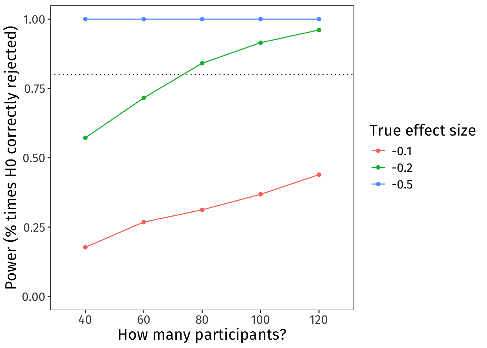
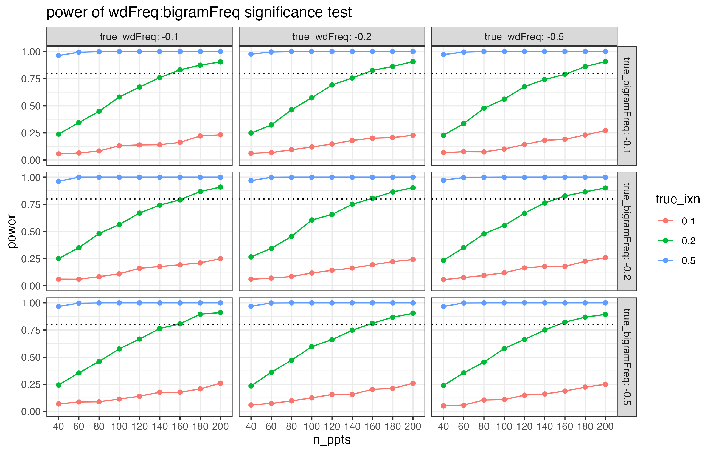
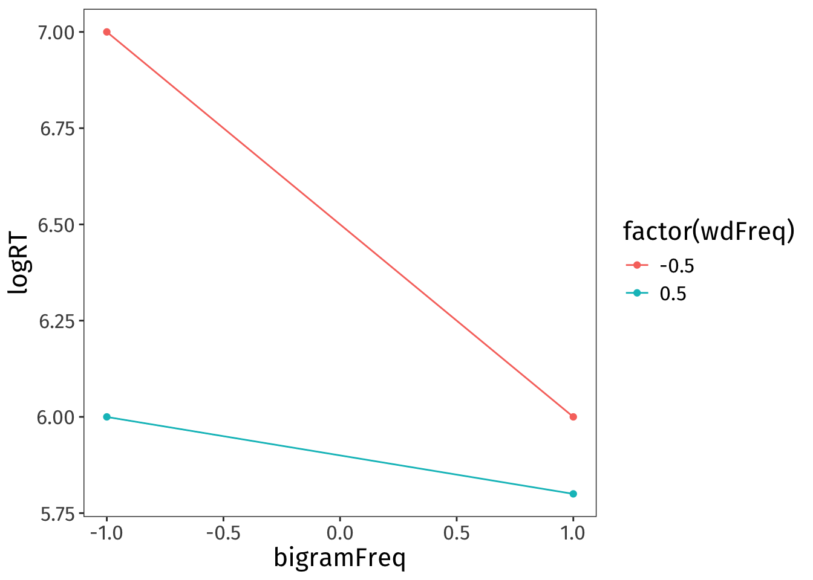
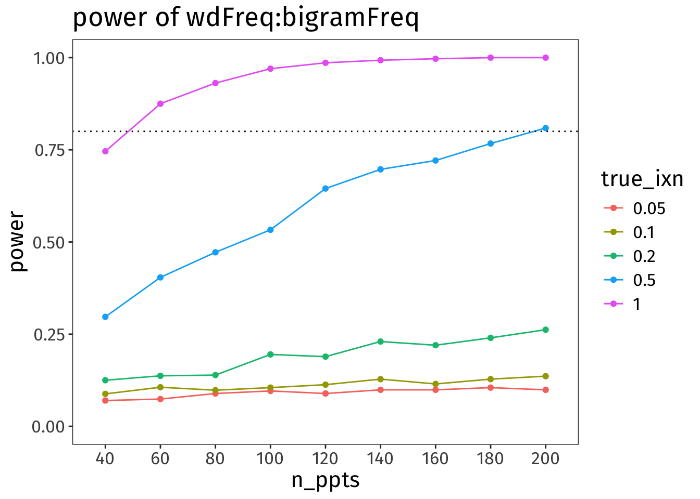
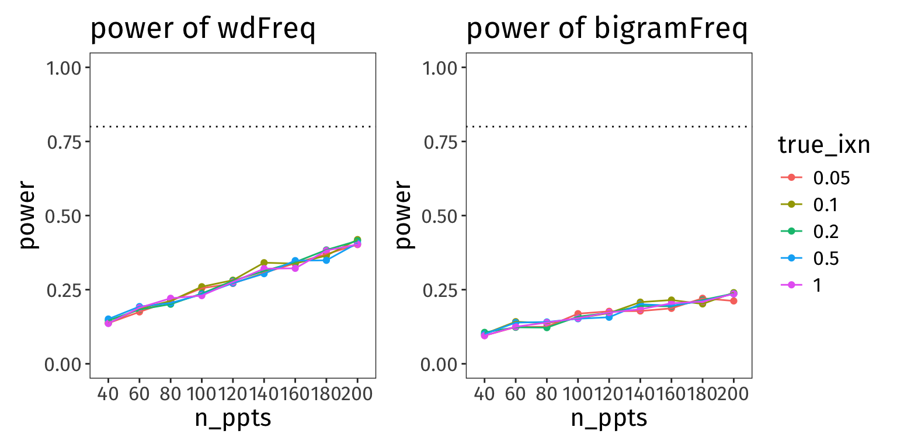

Power analysis for linear mixed models (workshop materials)
This page contains material for the power analysis workshop I’m holding in Prof. Holly Branigan and Prof. Martin Pickering’s lab meeting on 17 March, 2026.
Get set up in R
Load the libraries this workshop will use:
Code
library(tidyverse)
library(simr)
library(mixedpower)If you don’t have mixedpower installed already, you can install it with the following code. (mixedpower lives on GitHub, not CRAN, so install.packages() won’t work.)
Code
if(!require("devtools")){
install.packages("devtools", dependencies = TRUE)
}
devtools::install_github("DejanDraschkow/mixedpower")Build intuitions
Why do we care about power?
Short answer: power analyses are useful because they tell us how many experimental participants we should try to recruit.
🧠✨ Why do you care? Why were you interested in having this workshop?
What is statistical power?
For any null hypothesis (H0) that we are trying to test, there are two possible true states of the world:
- In reality, the H0 is true.
- In reality, the H0 is false.
Ideally, these true states of the world would map exactly to the two possible outcomes of a statistical test (assuming we’re doing Null Hypothesis Significance Testing, aka NHST):
- We fail to reject the H0.
- We reject the H0.
However, even if the H0 is really truly false, we are (alas!) not guaranteed to reject it. In other words, the probability that our test will correctly reject the H0 (that is, that we’ll reject the H0 when it really truly is false) is likely going to be less than 100%. Whatever that probability actually is is our test’s “statistical power”.
Statistical power depends on three values:
- our accepted alpha level (aka our false positive rate, aka our Type I error rate, aka the probability of rejecting the H0 when it is actually true);
- the true size of the effect out there in reality; and
- the number of observations we have gathered.
On alpha: The smaller your alpha, the lower your statistical power, because rejecting the H0 becomes more difficult. In Psychology and sister disciplines, we usually set our alpha at 5%. This means that we accept the risk that we’ll be incorrectly rejecting the H0 5% of the time.
On true effect size: The larger the true effect size, the more likely a test is to correctly detect it. Of course, we don’t know the true effect size—that’s why we’re doing stats about it! But we can use previous research and our expert judgements to make some educated guesses about what kinds of true effect sizes would be reasonable and/or theoretically interesting.
On number of observations: The larger your sample, the higher your power. The goal of the power analysis is to discover how many participants we need for a reasonably-powered study (usually 80%). We’ll do this by simulating a bunch of different sample sizes and comparing the power of each one.
Simulation, you say?
This schematic shows the basic logic behind a simulation-based power analysis:

When to run a power analysis?
The best time to run a power analysis is after piloting your experiment but before running the main thing. You’ll hear this referred to as an “a priori power analysis”.
Why run the pilot first? Because pilot data helps us approximate how much variability we should expect from which sources. For example, the pilot will give us the best possible information about how much
- by-participant variability
- by-stimulus variability
- by-whatever-else variability
- residual variability
our actual experimental data will contain.
Why not run the experiment first and analyse its power after the fact? Because doing a post-hoc power analysis which uses the observed effect size as a stand-in for the true effect size is just a different way of formulating whatever p-value you observed. So it doesn’t actually add any new information. (For more detail, see this blog post by Daniel Lakens.)
OK, enough preamble! Let’s see it in action!
Ex. 1: Start simple(ish) 🌶️
Imagine you’re running a lexical decision task to analyse the effect of a word’s frequency on how quickly people identify it as a word in their language.
🧠✨ What kind of effect would you expect to find?
Because many of you said you work with continuous outcomes, our outcome variable will be logged reaction times. But the same principles apply even if you have a different kind of outcome variable and different model family, e.g., 0/1 data and a binomial family.
And because many of you said you work with categorical predictors, we’ll group words into two frequency classes: one for low-frequency words, one for high-frequency words. (But Example 2 below will also throw in a continuous z-scored predictor.)
All told, our variables for this analysis will be the following:
logRT: logged reaction times (smaller values = faster)wdFreq: categorical, with two levels:low,high; varies within-participantsppt_id: categorical, with one value per participant
Build up basic power analysis, step by step
Here are the steps we’re going to follow:
- Formulate the model you want to fit.
- Define how all variables are coded/transformed.
- Simulate design matrix (aka a big data frame of all the observed combinations of our variables, except for the outcome).
- Define parameter values (e.g., the grand mean, the variance components, and the true effect size we’re interested in simulating).
- Use all this information to set up an artificial model with
simr::makeLmer(). - Use that model to run the power analysis with
mixedpower::mixedpower().
(In the later examples, we’ll iterate over a handful of different true effect sizes, to see how the true effect size makes a difference for how many participants we’d need to recruit. That iteration will bundle steps 5 and 6 together into one.)
1. Formulate the model you want to fit
We’ll get the most conservative power estimates if the model we use for the power analysis is the maximal model that your data structure permits. (For more detail on this point, see the Questions you submitted section below.)
Here is the model formula in R syntax:
logRT ~ wdFreq + (wdFreq | ppt_id)
If you want to see a mathematical version of this model specification, then you can uncollapse the box below. Some people find the mathematical specification useful because it specifies all the parameters that we’re going to need to define in the next few steps. But if that doesn’t spark joy, then don’t worry about it!
In words:
- Each participant \(i\)’s log RT equals
- the intercept \(\beta_0\) plus each participant’s intercept adjustment \(u_{0i}\); plus
- the slope over
wdFreq\(\beta_1\) plus each participant’s slope adjustment \(u_{1i}\), all timeswdFreq; plus - some error \(\epsilon\).
- The error \(\epsilon\) is sampled from a Normal distribution with mean 0 and standard deviation (SD) \(\sigma\).
- Each participant’s adjustments to intercept \(u_{0i}\) and slope \(u_{1i}\) are sampled together from a bivariate Normal distribution.
- The mean of each dimension is 0.
- The spread of the distribution in each dimension is defined by a variance-covariance matrix with the variance (SD\(^2\)) of each adjustment on the diagonal and the correlations between those adjustments on the off-diagonals. Here the correlations are assumed to be zero.
- NB: Because slope and intercept adjustments are uncorrelated in this example, I could also have written them being drawn from two separate univariate Normals, like in the \(\epsilon\) line. However, the
simrcode below wants a variance-covariance matrix, even if the correlations are 0, so for consistency, I’m using the bivariate Normal version here to give a reference point for where thesimrvariance-covariance matrix comes from.
In math:
\[ \begin{align} \text{logRT}_i &= (\beta_0 + u_{0i}) + (\beta_1 + u_{1i}) \cdot \text{wdFreq} + \epsilon \\ \epsilon &\sim \text{Normal}(0, \sigma) \\ \pmatrix{u_{0i} \\ u_{1i}} &\sim \text{Normal} \begin{bmatrix} \pmatrix{0 \\ 0}, \pmatrix{\sigma_{u_{0i}}^2 & 0 \\ 0 & \sigma_{u_{1i}}^2} \end{bmatrix} \\ \end{align} \]
Parameter glossary:
- \(i\) indexes participants
- \(\beta_0\) is the fixed intercept
- \(u_{0i}\) is the by-participant adjustment to fixed intercept
- \(\beta_1\) is the fixed slope over
wdFreq - \(u_{1i}\) is the by-participant adjustment to fixed slope
- \(\epsilon\) is the error
- \(\sigma\) is the SD of errors
- \(\sigma_{u_{0i}}\) is the SD of by-participant intercept adjustment
- \(\sigma_{u_{1i}}\) is the SD of by-participant slope adjustment
2. Define how all variables are coded/transformed
In order to make a reasonable guess about what values the model parameters might have, we need to know about the kinds of numbers that represent each variable. For example: what units are they in? what scales are they on? how will we contrast-code each categorical predictor?
We already know that the outcome logRT is in log units, rather than ms.
Let’s say that wdFreq will be “sum-coded”, which you’ll also see called “effect-coded”, which you’ll also see called “deviation-coded”. Because words have no meaning anymore, let’s just be explicit and say that low will be coded as –0.5 and high as +0.5.
Consequently:
- the intercept will represent the grand mean log RT;
- the slope over
wdFreqwill represent the change in log RT as we move fromlowtohigh.
🧠✨ Do you think that the wdFreq coefficient should have a positive value or a negative value?
3. Simulate design matrix
Imagine running a pilot study in which you gather logRT data from ten different participants. In your design, each participant sees ten words in total: five words from the low frequency group of wdFreq and five words from the high frequency group of wdFreq. After data collection, you’d end up with a dataframe with the following structure:
- a column
ppt_idcontaining each participant ID repeated ten times, once per word. - a column
wdFreqcontaining –0.5 repeated five times for the fivelowfrequency words, +0.5 repeated five times for the fivehighfrequency words; and - a column
logRTcontaining each participant’s log reaction time for the given word.
In this step, we’re basically going to generate all columns of this dataframe except for the outcome variable (which here is logRT). In stats terms, we’re generating the “design matrix”.
Code
n_ppts <- 10 # how many participants to simulate?
# (this number should match your pilot)
n_wds_per_ppt <- 10 # how many words does each ppt see?
# (this number should match your pilot + experiment)
simdat1 <- tibble(
ppt_id = rep(1:n_ppts, each = n_wds_per_ppt),
wdFreq = rep(
c(
rep(-0.5, n_wds_per_ppt/2),
rep(0.5, n_wds_per_ppt/2)
), n_ppts
)
)
simdat1 |> head(20)# A tibble: 20 × 2
ppt_id wdFreq
<int> <dbl>
1 1 -0.5
2 1 -0.5
3 1 -0.5
4 1 -0.5
5 1 -0.5
6 1 0.5
7 1 0.5
8 1 0.5
9 1 0.5
10 1 0.5
11 2 -0.5
12 2 -0.5
13 2 -0.5
14 2 -0.5
15 2 -0.5
16 2 0.5
17 2 0.5
18 2 0.5
19 2 0.5
20 2 0.5(There are so many different ways to generate this kind of data in R. I leave coding different experimental designs as a challenge for the reader 😊)
4. Define parameter values
We want our artificial model to contain our best guesses about the true values of all the model’s parameters. So, here’s where we use pilot data to make our best guess about (i) the model’s intercept and (ii) the variability we might expect to see in the data.
We will also use our expert judgement to define (iii) the effect sizes that we’d consider theoretically interesting—a key step of the power analysis!
(i) Intercept
Because our predictor is coded with \(\pm\) 0.5, the model’s intercept represents the grand mean log RT. (In other words: take the mean log RT of low frequency words and the mean log RT of high frequency words; the mean of both of those means is the grand mean).
Imagine we observed the following (unrealistically lovely and round) estimate from our pilot data:
Code
grand_mean <- 6.5(ii) Variance components
Our model, logRT ~ wdFreq + (wdFreq | ppt_id), is modelling three sources of variability:
- by-participant adjustments to the intercept;
- by-participant adjustments to the slope; and
- residual error.
For the power analysis, we need to define how variable we expect each of these three parameters to be. Specifically, we need to give the standard deviation (SD) of each one.
Let’s imagine that a pilot study gave us the following (unrealistically lovely and round) values:
Code
sd_int_by_ppt <- 1
sd_slp_by_ppt <- 0.5
sd_resid <- 0.5(iii) Effect of interest
Our research question asks how differences in wdFreq are associated with differences in logRT. So the parameter whose significance we are testing is the coefficient estimated for wdFreq.
🧠✨ Imagine we find a difference between low-frequency and high-frequency words of 0.001 log units. Even if we were able to reject the H0 that this parameter is equal to zero, is a difference of that magnitude theoretically interesting?
What about:
- 0.01 log units?
- 0.1 log units?
- 1 log unit?
- 10 log units?
- 100 log units?
Here’s where we use our expert judgement, along with results from prior literature, to decide on the smallest effect size that would be theoretically interesting. This value is often abbreviated as SESOI, for “Smallest Effect Size Of Interest”.
Let’s imagine for now that our SESOI is a change of 0.2 log units. We’ll represent this value as negative, because we expect log RT to get smaller (i.e., faster) when we move from low-frequency words (coded as –0.5) to high-frequency words (coded as +0.5).
Code
sesoi <- -0.2The power analysis that follows assumes that the true effect out there in reality is –0.2 log units. This is how we know the H0 in our simulation is false—we’ve declared that it has a value different from zero.
(Later on we will also check a couple other possible true effect sizes, both smaller and larger, so that we understand the power properties of our design more completely.)
5. Set up artificial model with makeLmer()
In Step 6 below, we’ll use mixedpower() to actually run the power analysis proper. One of the inputs that mixedpower() wants is a linear model fit to some data.
We haven’t simulated any outcome data—we’ve just defined a design matrix and some parameter values. And that is fine! We can use simr’s function makeLmer() to create a model object with what we’ve specified above. With simr in our back pocket, we don’t actually need to simulate any log RTs ourselves 😊
Code
simmod1 <- makeLmer(
formula = logRT ~ wdFreq + (1 + wdFreq | ppt_id),
## fixed effect coefs: intercept, wdFreq slope
fixef = c(grand_mean, sesoi),
## residual SD
sigma = sd_resid,
## variance-covariance matrix for random effects
VarCorr = matrix(
c(sd_int_by_ppt^2, 0, 0, sd_slp_by_ppt^2),
nrow=2,
byrow = T),
## design matrix
data = simdat1
)
summary(simmod1)Linear mixed model fit by REML ['lmerMod']
Formula: logRT ~ wdFreq + (1 + wdFreq | ppt_id)
Data: simdat1
REML criterion at convergence: 168.5
Scaled residuals:
Min 1Q Median 3Q Max
-2.61283 -0.61167 0.05058 0.63254 2.11188
Random effects:
Groups Name Variance Std.Dev. Corr
ppt_id (Intercept) 1.00 1.0
wdFreq 0.25 0.5 0.00
Residual 0.25 0.5
Number of obs: 100, groups: ppt_id, 10
Fixed effects:
Estimate Std. Error t value
(Intercept) 6.5000 0.3202 20.303
wdFreq -0.2000 0.1871 -1.069
Correlation of Fixed Effects:
(Intr)
wdFreq 0.000 (Make sure all the numbers you defined are showing up where you expected them to be!)
6. Run power analysis with mixedpower()
All that’s left is to decide how many participants we want to simulate. It’s good to range from “utopian by 1985 standards” to “we don’t have this much money”:
Code
n_ppts_to_sim <- c(40, 60, 80, 100, 120)Remember that our H0 is that the association between wdFreq and logRT is zero. We know that the H0 is false, because we defined the association between wdFreq and logRT to be –0.2 log units, not zero.
So, given that the H0 is false, how often does our design correctly reject the H0 with different numbers of participants? In other words, what is our design’s power at different participant counts?
Code
power1 <- mixedpower(
model = simmod1,
data = simdat1,
fixed_effects = c("wdFreq"),
simvar = "ppt_id",
steps = n_ppts_to_sim,
critical_value = 2,
n_sim = 1000
)Code
power1 40 60 80 100 120 mode effect
wdFreq 0.557 0.729 0.848 0.918 0.966 databased wdFreq- With 40 participants, power is 55.7%.
- With 60 participants, power is 72.9%.
- With 80 participants, power is 84.8%.
- With 100 participants, power is 91.8%.
- With 120 participants, power is 96.6%.
🧠✨ How many participants would you aim to recruit?
mixedpower()
- 🎲 Expect some slightly different values from mine. Usually I’d set a seed for a probabilistic process like this, but setting the seed seems to have no effect on
mixedpower(), so results will be a little different every time. - ⌛️ It can take several seconds, even a few minutes, for this code to run, especially when iterating over different parameter values like we will below.
- 🗃️ If you’re using R markdown, write
cache = Tin the header of the code chunk containing the call tomixedpower(). Withcache = T, the code chunk’s output will be stored, so that the code doesn’t need to be re-run every time you render the document. - 🖨️ While it’s running,
mixedpower()prints out a ton of status updates. To suppress these in the rendered document, update the code chunk’s header to also includeresults = 'hide'.
Iterate over different effect sizes
To understand our design’s power properties, it’s usually useful in practice to simulate a few different effect sizes, not just the SESOI.
Code
effects_to_sim <- c(-0.1, -0.2, -0.5)One way to code this is to use a for loop. (I’m sure R superbrains will have cleverer and more efficient ways to do this, but a for loop is good enough for me.)
The code below takes Steps 5 and 6 and runs them three times. Each time, the makeLmer() model defines a different true effect size.
Code
# set up accumulator to save the data from each iteration
# (we'll add on a new row each time)
power_accumulator1 <- tibble(
'40' = NA,
'60' = NA,
'80' = NA,
'100' = NA,
'120' = NA,
'mode' = NA,
'effect' = NA,
'true_effect_size' = NA,
)[0,]
# iterate!
for(curr_effect in effects_to_sim){
# set up the model with the current param estims
curr_model <- makeLmer(
formula = logRT ~ wdFreq + (1 + wdFreq | ppt_id),
fixef = c(grand_mean, curr_effect),
sigma = sd_resid,
VarCorr = matrix(
c(sd_int_by_ppt^2, 0, 0, sd_slp_by_ppt^2),
nrow = 2,
byrow = T
),
data = simdat1
)
# get power estims
curr_power <- mixedpower(
model = curr_model,
data = simdat1,
fixed_effects = c("wdFreq"),
simvar = "ppt_id",
steps = n_ppts_to_sim,
critical_value = 2,
n_sim = 1000,
)
# add current iteration's parameters to df
curr_power$true_effect_size <- curr_effect
# add to accumulator
power_accumulator1 <- rbind(power_accumulator1, curr_power)
}Code
power_accumulator1 40 60 80 100 120 mode effect true_effect_size
wdFreq 0.177 0.268 0.312 0.368 0.439 databased wdFreq -0.1
wdFreq1 0.572 0.716 0.841 0.915 0.961 databased wdFreq -0.2
wdFreq2 1.000 1.000 1.000 1.000 1.000 databased wdFreq -0.5After wrangling this data a bit, we can also make a nice little plot that shows power curves for our three different effect sizes:
Code
power_accumulator1 |>
# make df tall, not wide
pivot_longer(
cols = as.character(n_ppts_to_sim),
names_to = 'n_ppts',
values_to = 'power'
) |>
# make things into factors so they plot nicely
mutate(
true_effect_size = factor(true_effect_size, levels = effects_to_sim),
n_ppts = factor(n_ppts, levels = n_ppts_to_sim)
) |>
# plot!
ggplot(aes(x = n_ppts, y = power, colour = true_effect_size)) +
geom_hline(yintercept = 0.8, linetype = 'dotted') +
geom_point() +
geom_line(aes(group = true_effect_size)) +
ylim(0, 1) +
labs(
y = 'Power (% times H0 correctly rejected)',
x = 'How many participants?',
colour = 'True effect size'
)
🧠✨ Imagine the true effect size is –0.1. How many participants would you aim to recruit?
And that’s a power analysis!
Ex. 2: Get spicier 🌶🌶
Usually our linear models are more complex than the model in Example 1. We often want to model interactions between predictors, and we often have to account for variability from multiple sources (e.g., participant-level and stimulus-level). This section illustrates the same process shown above for a more complex model.
Imagine we’re still looking at log RTs in a lexical decision task. We still have our categorical predictor wdFreq, but now we’ll also incorporate the mean frequency of individual bigrams within each word. So, we’re adding in a continuous predictor, bigramFreq, and we’ll also allow it to interact with wdFreq.
Our variables for this analysis will be the following:
logRT: logged reaction times (smaller values = faster)wdFreq: categorical, with two levels:low,high- varies within participants
- varies between words
bigramFreq: continuous, mean bigram frequency within each word, z-scored- varies within participants
- varies between words
ppt_id: categorical, one value per participantwd_id: categorical, one value per word
Our question is: Does bigram frequency have a different effect on log RTs for high-frequency words and low-frequency words?
Our hypothesis might be that high-frequency words will have fast RTs across the board, maybe even slightly faster when bigram frequency is also high. But for low-frequency words, bigram frequency will make a big difference: RTs will be slower when bigram frequency is lower, and faster when bigram frequency is higher.
1. Formulate the model
The maximal model is the following:
logRT ~ wdFreq * bigramFreq + (wdFreq * bigramFreq | ppt_id) + (1 | wd_id)
In words:
- Each participant \(i\)’s and word \(j\)’s log RT equals
- the intercept \(\beta_0\) plus each participant’s intercept adjustment \(u_{0i}\) plus eaach word’s intercept adjustment \(w_{0j}\); plus
- the slope over
wdFreq\(\beta_1\) plus each participant’s slope adjustment \(u_{1i}\), all timeswdFreq; plus - the slope over
bigramFreq\(\beta_2\) plus each participant’s slope adjustment \(u_{2i}\), all timesbigramFreq; plus - the slope over
wdFreq:bigramFreq\(\beta_3\) plus each participant’s interaction adjustment \(u_{3i}\), all timeswdFreqtimesbigramFreq; plus - some error \(\epsilon\).
- The error \(\epsilon\) is sampled from a Normal distribution with mean 0 and standard deviation (SD) \(\sigma\).
- Each participant’s adjustments to intercept \(u_{0i}\), slopes \(u_{1i}\) and \(u_{2i}\), and interaction term \(u_{3i}\), are sampled together from a multivariate Normal distribution.
- The mean of each dimension is 0.
- The spread of the distribution in each dimension is defined by a variance-covariance matrix with the variance (SD\(^2\)) of each adjustment on the diagonal and the correlations between those adjustments on the off-diagonals. Here the correlations are assumed to be zero.
- Each word’s adjustment to the intercept \(w_{0j}\) is sampled from a Normal distribution with mean 0 and standard deviation \(\sigma_{w_{0j}}\).
In math:
\[ \begin{align} \text{logRT}_{ij} =~& (\beta_0 + u_{0i} + w_{0j}) ~ + \\ & (\beta_1 + u_{1i}) \cdot \text{wdFreq} ~ + \\ & (\beta_2 + u_{2i}) \cdot \text{bigramFreq} ~ + \\ & (\beta_3 + u_{3i}) \cdot \text{wdFreq} \cdot \text{bigramFreq} + \epsilon \\[.5em] \epsilon \sim~& \text{Normal}(0, \sigma) \\[.3em] \pmatrix{u_{0i} \\ u_{1i} \\ u_{2i} \\ u_{3i}} \sim~& \text{Normal} \begin{bmatrix} \pmatrix{0 \\ 0 \\ 0 \\ 0}, \pmatrix{ \sigma_{u_{0i}}^2 & 0 & 0 & 0\\ 0 & \sigma_{u_{1i}}^2 & 0 & 0\\ 0& 0 & \sigma_{u_{2i}}^2 & 0\\ 0 & 0 & 0 & \sigma_{u_{3i}}^2\\ } \end{bmatrix} \\ w_{0j} \sim~& \text{Normal}(0, \sigma_{w_{0j}}) \end{align} \]
Parameter glossary:
- \(i\) indexes participants
- \(j\) indexes words
- \(\beta_0\) is the intercept
- \(u_{0i}\) is the by-participant adjustment to intercept
- \(w_{0j}\) is the by-word adjustment to intercept
- \(\beta_1\) is the slope over
wdFreq - \(u_{1i}\) is the by-participant adjustment to slope over
wdFreq - \(\beta_2\) is the slope over
bigramFreq - \(u_{2i}\) is the by-participant adjustment to slope over
bigramFreq - \(\beta_3\) is the interaction term between
wdFreqandbigramFreq, i.e., how much the effect of one predictor changes with a change in the value of the other. - \(u_{3i}\) is the by-participant adjustment to the interaction term
- \(\epsilon\) is the error
- \(\sigma\) is the SD of errors
- \(\sigma_{u_{0i}}\) is the SD of by-participant intercept adjustment
- \(\sigma_{u_{1i}}\) is the SD of by-participant slope adjustment to
wdFreq - \(\sigma_{u_{2i}}\) is the SD of by-participant slope adjustment to
bigramFreq - \(\sigma_{u_{3i}}\) is the SD of by-participant interaction adjustment
- \(\sigma_{w_{0j}}\) is the SD of by-word intercept adjustment
2. Define variable coding/transformation
wdFreq:- As in Example 1,
lowfrequency is coded as –0.5,highfrequency as +0.5. - The
wdFreqparameter gives the effect of moving fromlowtohighwhenbigramFreq= 0.
- As in Example 1,
bigramFreq:- The mean frequency of bigrams in each word, z-scored so that the mean is 0 and SD is 1. (Using z-scores makes simulating data super easy!)
- The
bigramFreqparameter gives the effect of moving from mean bigram frequency to one SD above the mean for “average”wdFreq.
Intercept:- Because both of the predictors are centered on 0, the intercept still represents the grand mean log RT.
3. Simulate design matrix
Code
n_ppts <- 10 # same as in your pilot
n_wds_per_ppt <- 10 # same as in your pilot + experiment
set.seed(1)
simdat2 <- tibble(
ppt_id = rep(1:n_ppts, each = n_wds_per_ppt),
wd_id = rep(1:n_wds_per_ppt, n_ppts),
wdFreq = rep(
c(
rep(-0.5, n_wds_per_ppt/2),
rep(0.5, n_wds_per_ppt/2)
), n_ppts
),
bigramFreq = rep(rnorm(n_wds_per_ppt, mean = 0, sd = 1), n_ppts)
)
simdat2 |> head(20)# A tibble: 20 × 4
ppt_id wd_id wdFreq bigramFreq
<int> <int> <dbl> <dbl>
1 1 1 -0.5 -0.626
2 1 2 -0.5 0.184
3 1 3 -0.5 -0.836
4 1 4 -0.5 1.60
5 1 5 -0.5 0.330
6 1 6 0.5 -0.820
7 1 7 0.5 0.487
8 1 8 0.5 0.738
9 1 9 0.5 0.576
10 1 10 0.5 -0.305
11 2 1 -0.5 -0.626
12 2 2 -0.5 0.184
13 2 3 -0.5 -0.836
14 2 4 -0.5 1.60
15 2 5 -0.5 0.330
16 2 6 0.5 -0.820
17 2 7 0.5 0.487
18 2 8 0.5 0.738
19 2 9 0.5 0.576
20 2 10 0.5 -0.3054. Define parameter values
(i) Grand mean
Let’s assume we’ve run a pilot study which tells us that the grand mean log RT is, again, 6.5 log units.
Code
grand_mean <- 6.5(ii) Variance components
Let’s also assume that our pilot study has given us the following SDs for all the sources of variability in our new model:
- by-participant adjustments to the intercept;
- by-participant adjustments to the slope of
wdFreq; - by-participant adjustments to the slope of
bigramFreq; - by-participant adjustments to the interaction between
wdFreqandbigramFreq; - by-word adjustments to the intercept; and
- residual error.
Code
sd_int_by_ppt <- 1.5
sd_wdF_by_ppt <- 0.5
sd_bgF_by_ppt <- 0.5
sd_ixn_by_ppt <- 0.5
sd_int_by_wd <- 0.8
sd_resid <- 0.5At this point, let’s also generate the variance-covariance matrix that makeLmer() will demand for the by-participant adjustments. (In real life, you would just extract this from the model fit to your pilot data; just look for the label VarCorr among the model’s components.)
Code
vcov_by_ppt <- matrix(data = 0, nrow = 4, ncol = 4)
diag(vcov_by_ppt) <- c(
sd_int_by_ppt^2,
sd_wdF_by_ppt^2,
sd_bgF_by_ppt^2,
sd_ixn_by_ppt^2
)
vcov_by_ppt [,1] [,2] [,3] [,4]
[1,] 2.25 0.00 0.00 0.00
[2,] 0.00 0.25 0.00 0.00
[3,] 0.00 0.00 0.25 0.00
[4,] 0.00 0.00 0.00 0.25Each adjustment’s variance (SD\(^2\)) is on the diagonal, and the zeroes on the off-diagonals state that we’re assuming that none of these adjustments are correlated with any other ones.
(iii) Effects of interest
This more complex model has three fixed effects: wdFreq, bigramFreq, and their interaction. Do we need to simulate different true effect sizes for all of them?
Let’s think about the question we’re investigating:
Does bigram frequency have a different effect on log RTs for high-frequency words and low-frequency words?
That question can only be answered by looking at the interaction term. And so our power analysis will focus on the interaction term too.
Here’s a fun fact that makes our lives easier: the power properties of the interaction term don’t depend on the interacting predictors having specific values. This means that we don’t need to simulate tons of combinations of different effects for wdFreq and bigramFreq. We can just set them to some constant value and focus our computation on varying the size of the true interaction parameter, because no matter what value the interacting predictors have, the power properties of the interaction term will be the same.
Here are some plots from a different version of this power analysis (so the results are a bit different than what you’ll see below!).

The facets in this plot show different combinations of true effect sizes for wdFreq and bigramFreq. But in every single facet, the overall pattern is the same. What this means is that the power properties of the interaction term are unaffected by the values of the interacting predictors.
Let’s set wdFreq to –0.2 again. Now that there’s an interaction in the model, the interpretation of this value changs a little. This –0.2 means that as we move from low frequency words to high frequency words, with bigramFreq at its mean of zero, log RT will decrease by 0.2 log units.
And let’s set bigramFreq to –0.1. This value means that as we move from mean bigram frequency to one SD above the mean, averaging over low and high frequency words, log RT will decrease by 0.1 log units.
Code
wdFreq_effect <- -0.2
bigramFreq_effect <- -0.1Now, the interaction…
Interactions are tricky to reason about at the best of times, and I find them extra unintuitive when predictors are centered. I used a little simulation-based trick to determine that, if our hypothesis is borne out, the interaction term should be positive (see the dropdown box below for details).
I created a dataframe containing a basic constellation of mean log RTs that our hypothesis predicts.
Code
simmeans2 <- tibble(
wdFreq = c(-0.5, -0.5, 0.5, 0.5),
bigramFreq = c(-1, 1, -1, 1),
logRT = c(7, 6, 6, 5.8)
)
simmeans2 |>
ggplot(aes(x = bigramFreq, y = logRT, colour = factor(wdFreq))) +
geom_point() +
geom_line() 
Then I fit a simple linear model to this data. It can’t estimate any error, obviously, because the data contains none—but it will fit lines to the four data points provided.
Code
summary(lm(logRT ~ wdFreq * bigramFreq, data = simmeans2))
Call:
lm(formula = logRT ~ wdFreq * bigramFreq, data = simmeans2)
Residuals:
ALL 4 residuals are 0: no residual degrees of freedom!
Coefficients:
Estimate Std. Error t value Pr(>|t|)
(Intercept) 6.2 NaN NaN NaN
wdFreq -0.6 NaN NaN NaN
bigramFreq -0.3 NaN NaN NaN
wdFreq:bigramFreq 0.4 NaN NaN NaN
Residual standard error: NaN on 0 degrees of freedom
Multiple R-squared: 1, Adjusted R-squared: NaN
F-statistic: NaN on 3 and 0 DF, p-value: NAThis model summary tells me that if the data comes out looking the way we hypothesise, both conditional effects are negative and the interaction term is positive.
(You could also use this trick to work out a reasonable SESOI for the interaction term!)
Let’s imagine that the interaction term’s SESOI is 0.2 (the simulation-based trick from the dropdown box can help nail down this value too). And to better understand the power properties of the design, let’s include a range of values on either side.
Code
ixns_to_sim <- c(0.05, 0.1, 0.2, 0.5, 1)5/6. Run power analysis, iterating over parameter values
We’ll simulate a greater range of participant counts this time.
Code
n_ppts_to_sim2 <- c(40, 60, 80, 100, 120, 140, 160, 180, 200)Here’s the code to run the simulation! (For me, it takes 10–15 minutes to run.)
Code
# define the accumulator
# (we'll add a new row on each time)
power_accumulator2 <- tibble(
'40' = NA,
'60' = NA,
'80' = NA,
'100' = NA,
'120' = NA,
'140' = NA,
'160' = NA,
'180' = NA,
'200' = NA,
'mode' = NA,
'effect' = NA,
'true_ixn' = NA,
)[0,]
# iterate!
for(curr_ixn in ixns_to_sim){
# set up the model with the current param estims
curr_model <- makeLmer(
formula = logRT ~ wdFreq * bigramFreq +
(1 + wdFreq * bigramFreq | ppt_id) + (1 | wd_id),
fixef = c(grand_mean, wdFreq_effect, bigramFreq_effect, curr_ixn),
sigma = sd_resid,
VarCorr = list(
# the four-dimension vcov matrix for the by-ppt adjustments
vcov_by_ppt,
# the variance of the by-word intercept adjustment
sd_int_by_wd^2
),
data = simdat2
)
# get power estims
curr_power <- mixedpower(
model = curr_model,
data = simdat2,
fixed_effects = c("wdFreq", "bigramFreq"),
simvar = "ppt_id",
steps = n_ppts_to_sim2,
critical_value = 2,
n_sim = 1000
)
# add current iteration's parameters
curr_power$true_ixn <- curr_ixn
# add to accumulator
power_accumulator2 <- rbind(power_accumulator2, curr_power)
}Code
power_accumulator2 |> kableExtra::kbl()| 40 | 60 | 80 | 100 | 120 | 140 | 160 | 180 | 200 | mode | effect | true_ixn | |
|---|---|---|---|---|---|---|---|---|---|---|---|---|
| wdFreq | 0.137 | 0.175 | 0.212 | 0.255 | 0.271 | 0.307 | 0.339 | 0.370 | 0.402 | databased | wdFreq | 0.05 |
| bigramFreq | 0.095 | 0.124 | 0.125 | 0.169 | 0.177 | 0.178 | 0.187 | 0.221 | 0.212 | databased | bigramFreq | 0.05 |
| wdFreq:bigramFreq | 0.070 | 0.074 | 0.089 | 0.096 | 0.089 | 0.099 | 0.099 | 0.105 | 0.099 | databased | wdFreq:bigramFreq | 0.05 |
| wdFreq1 | 0.137 | 0.186 | 0.212 | 0.260 | 0.282 | 0.341 | 0.338 | 0.365 | 0.419 | databased | wdFreq | 0.10 |
| bigramFreq1 | 0.101 | 0.142 | 0.137 | 0.154 | 0.171 | 0.208 | 0.215 | 0.202 | 0.240 | databased | bigramFreq | 0.10 |
| wdFreq:bigramFreq1 | 0.088 | 0.106 | 0.098 | 0.105 | 0.113 | 0.128 | 0.115 | 0.128 | 0.136 | databased | wdFreq:bigramFreq | 0.10 |
| wdFreq2 | 0.146 | 0.183 | 0.201 | 0.237 | 0.280 | 0.313 | 0.343 | 0.384 | 0.415 | databased | wdFreq | 0.20 |
| bigramFreq2 | 0.106 | 0.123 | 0.122 | 0.159 | 0.172 | 0.195 | 0.194 | 0.215 | 0.237 | databased | bigramFreq | 0.20 |
| wdFreq:bigramFreq2 | 0.125 | 0.137 | 0.139 | 0.195 | 0.189 | 0.230 | 0.220 | 0.240 | 0.262 | databased | wdFreq:bigramFreq | 0.20 |
| wdFreq3 | 0.151 | 0.193 | 0.205 | 0.234 | 0.272 | 0.304 | 0.348 | 0.349 | 0.407 | databased | wdFreq | 0.50 |
| bigramFreq3 | 0.100 | 0.139 | 0.141 | 0.152 | 0.157 | 0.201 | 0.196 | 0.212 | 0.236 | databased | bigramFreq | 0.50 |
| wdFreq:bigramFreq3 | 0.297 | 0.404 | 0.472 | 0.533 | 0.645 | 0.697 | 0.721 | 0.767 | 0.809 | databased | wdFreq:bigramFreq | 0.50 |
| wdFreq4 | 0.136 | 0.189 | 0.221 | 0.230 | 0.276 | 0.321 | 0.322 | 0.382 | 0.403 | databased | wdFreq | 1.00 |
| bigramFreq4 | 0.095 | 0.125 | 0.139 | 0.154 | 0.173 | 0.184 | 0.204 | 0.210 | 0.236 | databased | bigramFreq | 1.00 |
| wdFreq:bigramFreq4 | 0.746 | 0.875 | 0.931 | 0.970 | 0.986 | 0.993 | 0.997 | 1.000 | 1.000 | databased | wdFreq:bigramFreq | 1.00 |
Notice that we get power estimates for wdFreq and bigramFreq too, how nice.
Let’s first wrangle the data into tall format:
Code
power2_tall <- power_accumulator2 |>
pivot_longer(
cols = as.character(n_ppts_to_sim2),
names_to = 'n_ppts',
values_to = 'power'
) |>
mutate(
n_ppts = factor(n_ppts, levels = n_ppts_to_sim2),
true_ixn = factor(true_ixn, levels = ixns_to_sim)
)
power2_tall |> head()# A tibble: 6 × 5
mode effect true_ixn n_ppts power
<chr> <chr> <fct> <fct> <dbl>
1 databased wdFreq 0.05 40 0.137
2 databased wdFreq 0.05 60 0.175
3 databased wdFreq 0.05 80 0.212
4 databased wdFreq 0.05 100 0.255
5 databased wdFreq 0.05 120 0.271
6 databased wdFreq 0.05 140 0.307And now let’s plot!
Code
power2_tall |>
filter(effect == 'wdFreq:bigramFreq') |>
mutate(true_ixn = factor(true_ixn)) |>
ggplot(aes(x = n_ppts, y = power, colour = true_ixn)) +
geom_point() +
geom_line(aes(group = true_ixn)) +
ylim(0, 1) +
geom_hline(yintercept = 0.8, linetype = 'dotted') +
labs(
title = 'power of wdFreq:bigramFreq'
) +
NULL
Oof!
🧠✨ What does this power analysis tell us about the power of our interaction term?
wdFreq and bigramFreq
Here are the analogous plots showing the power of the other two fixed effects:
Code
library(patchwork)
p_wdF <- power2_tall |>
filter(effect == 'wdFreq') |>
mutate(true_ixn = factor(true_ixn)) |>
ggplot(aes(x = n_ppts, y = power, colour = true_ixn)) +
geom_point() +
geom_line(aes(group = true_ixn)) +
# facet_grid(true_bigramFreq ~ true_wdFreq, labeller = label_both) +
ylim(0, 1) +
geom_hline(yintercept = 0.8, linetype = 'dotted') +
labs(
title = 'power of wdFreq'
) +
NULL
p_bgF <- power2_tall |>
filter(effect == 'bigramFreq') |>
mutate(true_ixn = factor(true_ixn)) |>
ggplot(aes(x = n_ppts, y = power, colour = true_ixn)) +
geom_point() +
geom_line(aes(group = true_ixn)) +
ylim(0, 1) +
geom_hline(yintercept = 0.8, linetype = 'dotted') +
labs(
title = 'power of bigramFreq'
) +
NULL
p_wdF + p_bgF + plot_layout(guides = 'collect')
Assuming the true effect sizes we set above, these parameters are really low-powered.
And notice how the value of the interaction term doesn’t seem to really make a difference for the power of these effects, just like their values don’t affect the power of the interation term.
Questions you submitted
- Different folks have different styles.
- I would keep the body of the paper streamlined and only go into greater detail in the appendix/supplementary materials/OSF project/whatever extra bonus thing.
- For example, in the body of the paper, I might write something like
We aimed to collect analysable data from N participants, because a power analysis indicated that with N participants, we could identify a true effect of size X with 80% power (see Appendix A). We recruited a total of N+x participants to account for attrition, exclusion, etc., and ended up analysing data from N–y participants.
- and then in Appendix A, I’d include a prose description of the process and plots like the ones made above.
- And if you already share your analysis code online, then definitely share the power analysis code too.
- I recommend using the maximal model for the power analysis, even if you ultimately can’t fit that model to your real data because of convergence issues etc.
- Why use the maximal model? Because maximal models are the most conservative possible model, and they have lower statistical power compared to simpler models (see Matuschek et al., 2017).
- In other words, the maximal model will give you a larger estimate of how many participants you need to have a well-powered statistical test than a simpler model would.
- Imagine the maximal model fails to converge when you fit it to your experimental data and you need to simplify the model structure. That’s fine! By this logic, as long as you you collected the amount of data that makes the maximal model well-powered, then your simpler model should be even more well-powered.
- For me, this choice depends on the research question/hypothesis that you’re testing.
- If your research question can best be answered by finding out whether one model is a significant improvement over the other, then model comparisons are the way to go; e.g.,
- “Is X a useful predictor of Y?”
- “Does Z explain a significant amount of variance in Y, over and above the variance explained by X?”
- If your research question can best be answered by finding out whether some model parameter is significantly different from zero, then parameter testing is the way to go; e.g.,
- “Is the grand mean of Y significantly different from zero?”
- “Is a change in X significantly associated with a change in Y?”
- If your research question can best be answered by finding out whether one model is a significant improvement over the other, then model comparisons are the way to go; e.g.,
- To do simulation-based power analyses for model comparison, the same principles should hold:
- simulate data that you declare to represent the real world;
- fit both models to that data;
- do those steps a bunch of times and see what proportion of the time the model comparison test rejects the H0.
Additional resources
- Kumle et al.’s notebook walkthroughs of
mixedpower - Video lectures from Shravan Vasishth’s fantastic intro stats course; lesson 12 is all about simulating data from scratch for power analysis
Session info
sessionInfo()R version 4.5.2 (2025-10-31)
Platform: aarch64-apple-darwin20
Running under: macOS Sequoia 15.7.3
Matrix products: default
BLAS: /System/Library/Frameworks/Accelerate.framework/Versions/A/Frameworks/vecLib.framework/Versions/A/libBLAS.dylib
LAPACK: /Library/Frameworks/R.framework/Versions/4.5-arm64/Resources/lib/libRlapack.dylib; LAPACK version 3.12.1
locale:
[1] en_US.UTF-8/en_US.UTF-8/en_US.UTF-8/C/en_US.UTF-8/en_US.UTF-8
time zone: Europe/London
tzcode source: internal
attached base packages:
[1] stats graphics grDevices utils datasets methods base
other attached packages:
[1] patchwork_1.3.2 mixedpower_0.1.0 simr_1.0.8 lme4_1.1-38
[5] Matrix_1.7-4 lubridate_1.9.4 forcats_1.0.1 stringr_1.6.0
[9] dplyr_1.2.0 purrr_1.2.1 readr_2.1.6 tidyr_1.3.2
[13] tibble_3.3.1 ggplot2_4.0.1 tidyverse_2.0.0
loaded via a namespace (and not attached):
[1] gtable_0.3.6 xfun_0.56 htmlwidgets_1.6.4 lattice_0.22-7
[5] tzdb_0.5.0 vctrs_0.7.1 tools_4.5.2 Rdpack_2.6.5
[9] generics_0.1.4 parallel_4.5.2 pbkrtest_0.5.5 pkgconfig_2.0.3
[13] RColorBrewer_1.1-3 S7_0.2.1 lifecycle_1.0.5 binom_1.1-1.1
[17] compiler_4.5.2 farver_2.1.2 textshaping_1.0.4 carData_3.0-6
[21] htmltools_0.5.9 yaml_2.3.12 Formula_1.2-5 pillar_1.11.1
[25] car_3.1-3 nloptr_2.2.1 MASS_7.3-65 reformulas_0.4.4
[29] iterators_1.0.14 boot_1.3-32 abind_1.4-8 nlme_3.1-168
[33] tidyselect_1.2.1 digest_0.6.39 stringi_1.8.7 labeling_0.4.3
[37] splines_4.5.2 fastmap_1.2.0 grid_4.5.2 RLRsim_3.1-9
[41] cli_3.6.5 magrittr_2.0.4 utf8_1.2.6 broom_1.0.12
[45] withr_3.0.2 scales_1.4.0 backports_1.5.0 plotrix_3.8-14
[49] timechange_0.4.0 rmarkdown_2.30 otel_0.2.0 hms_1.1.4
[53] kableExtra_1.4.0 evaluate_1.0.5 knitr_1.51 rbibutils_2.4.1
[57] viridisLite_0.4.2 mgcv_1.9-4 rlang_1.1.7 Rcpp_1.1.1
[61] glue_1.8.0 xml2_1.5.2 svglite_2.2.2 rstudioapi_0.18.0
[65] minqa_1.2.8 jsonlite_2.0.0 plyr_1.8.9 R6_2.6.1
[69] systemfonts_1.3.1